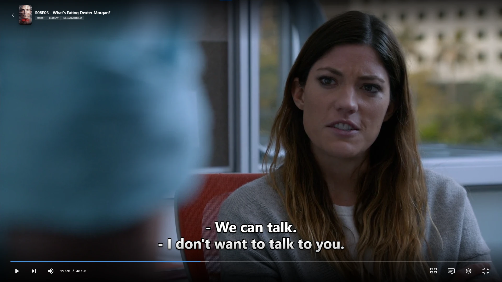

please
watchA self-hosted media server for movies, TV, anime, manga and books.
Same idea as Plex or Jellyfin. The torrent picker, watch parties, dual subtitles and the readers are already inside, so there is nothing to bolt on.
Free and open source. One script on a fresh VPS and your library is up.

what is it
pleasewatch is one Rust binary with an SQLite file next to it. It serves the web app, plays your video, keeps watch progress for every user and talks to the download services.
You search a title, pick a release, and it lands in the library with posters, episodes and subtitles sorted out.

Built for private libraries and media you have the right to access.
what's inside


torrent picker
Search qBittorrent, Jackett and Prowlarr from the title page. Season packs skip episodes already on disk and junk files like .exe.
epub and manga reader
Books and manga open in the browser, with page and chapter counts on the shelf.
live
Sports board with ESPN scores, TV channels from iptv-org.
inbox
Send a title to another user. It lands in their inbox.
uploads
Add your own video files. Anything without a real video stream is rejected.
admin panel
Users and approvals, downloads, clips, storage, logs, health and a watch leaderboard.
shelves
Continue watching, collections, recommendations and recently added, for movies, shows and anime.
watch together
Everyone in a room plays against the server clock, so nobody has to count down "3, 2, 1, play". Viewers stay within about a quarter second of each other.
There is an optional mode that pauses the whole room while someone buffers. Press the button to try it.
two subtitles at once
z
I to to
Hover or tap a word to see its match in the other language. Click to hear it.
A second subtitle track sits above the main one, in English, Polish or German. Handy when you are learning a language from the shows you already watch.
get it running
sudo git clone https://github.com/krisoft20/pleasewatch /opt/pleasewatch
cd /opt/pleasewatch/deploy
sudo ./setup.sh --domain watch.example.comRun this on a fresh Ubuntu or Debian box with Docker. Point your domain at the server first and Caddy sorts out HTTPS.
No domain yet? Run sudo ./setup.sh and open the server IP.
- Open the URL printed by setup.sh.
- Register the first account. It becomes admin.
- Add a free TMDB key on /onboarding.
- Open the app. Download services can wait.
how it's built
| backend | Rust, Axum, rusqlite, Tokio, reqwest |
|---|---|
| frontend | SvelteKit, Svelte 5, Vite, adapter-static |
| storage | SQLite and plain media folders |
| deploy | Docker Compose, Caddy |
| license | AGPL-3.0-only |
No ORM and no separate web server for the frontend. The backend serves the static build, so production is a single container plus the download services.